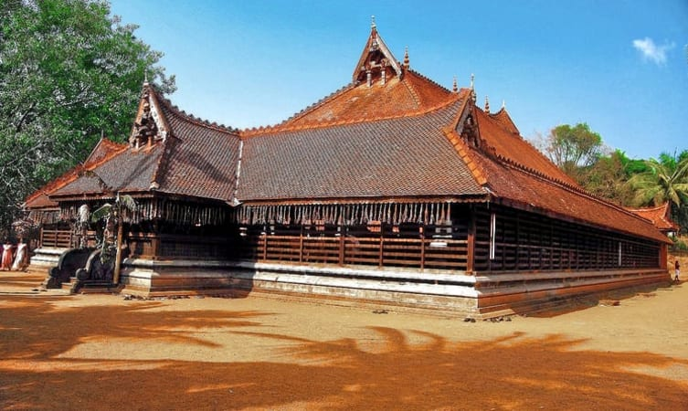

Thrissur
Cultural capital of kerala

Vadakkunnathan Temple
An ancient temple of Kerala

Athirappilly Waterfalls
one of the best places to visit
Cultural capital of kerala
An ancient temple of Kerala
one of the best places to visit
The best of Thrissur tourist places include the name of attractions like Dolours Basilica, Athirappilly Waterfalls, Vilangan Kunnu, Punnathur Kotta, Shakthan Thampuran Palace, and Thrissur Zoo and State Museum. A religious town in the state of Kerala, Thrissur is very well known for the many religious sites, temples, spiritual centres, and colourful celebrations during the festival season.
Apart from the religious side of the town, there are also a number of beaches, hillocks, forests, and waterfalls are wait for you when you arrive here. Take a look at this guide to know where to go on your trip to Thrissur in God’s Own Country, Kerala.
Located about 10 kilometers south of Guruvayoor, Chettuva backwaters is dotted with mangrove vegetation and islets, the place is known for the tranquility it offers. The place offer boat trips through the backwaters and the biggest mangrove forest in Kerala is situated in the middle of the Chettuva backwaters. Boating starts from Vettakkorumakan boat landing, which is about 21 km from Thrissur Town. Full day and half day trips are available.
It is Kerala's most famous and largest waterfall at over 80 ft high. The sight of the water crashing onto the ground leaves you with a sense of wonder at the sheer power and magnificence of nature. Located around 63 km from Thrissur district, it is a perennial picnic spot for people in the area and beyond. Its surrounding greenery is perfect for walks and picnics with loved ones. Lying at the entrance to the Sholayar forest ranges, it is a part of the Chalakudy River which calls the Western Ghats its home.
Punnathurkotta was once the palace of a local ruler, but the palace grounds are now used to house the elephants belonging to the Guruvayoor temple, and has been renamed Anakkotta (meaning "Elephant Fort"). There were 86 elephants housed there, but currently there are about 59 elephants. The elephants are ritual offerings made by the devotees of Lord Guruvayurappa.